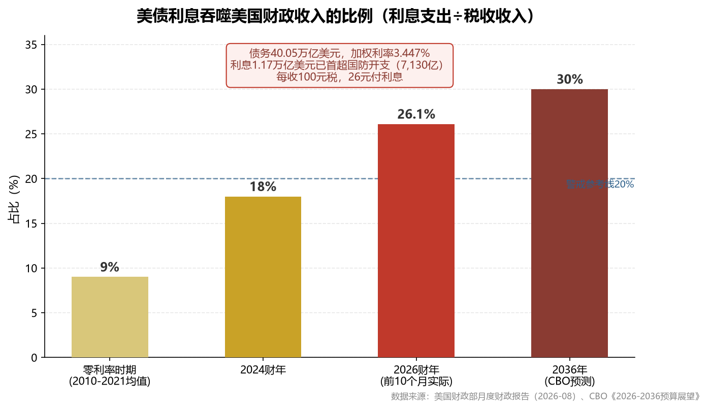
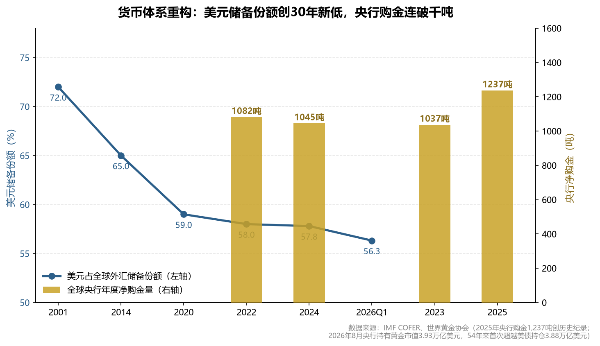
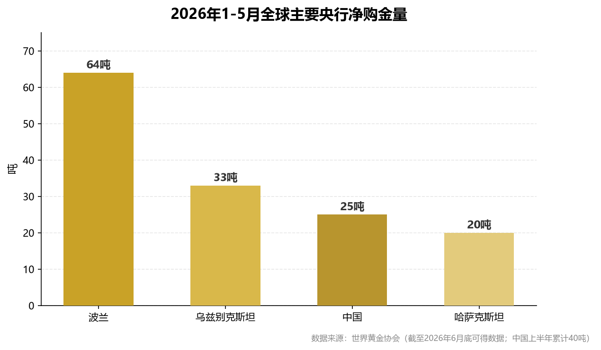
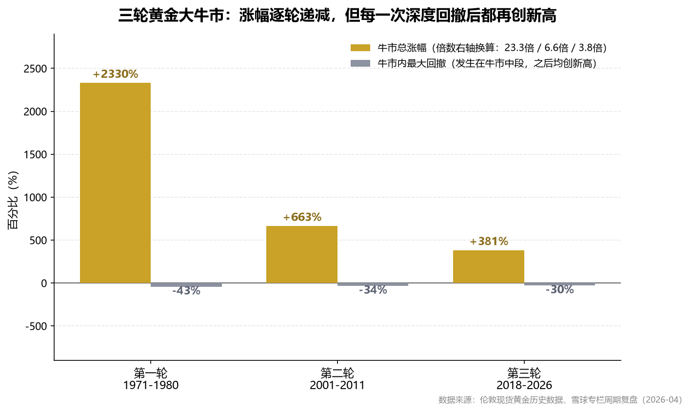

决议核心（9/17凌晨）：美联储以12-0全票通过加息25bp至3.75%-4.00%，为2023年7月以来首次收紧。点阵图偏鹰：16/18官员预计年内至少再加息1次（6月时仅6人），2026年底利率中值由3.75%上调至4.10%；将通胀回2%目标的时间推迟至2029年（晚一年）。沃什发布会放鹰："通胀太高且持续太久，不确信在回落"。
市场反应：现货黄金从决议前4,350跌至日低4,235，收4,263（-0.7%）；现货白银探62.48，收62.96（-1.08%）；美元指数站上100；10Y美债破5%。CME显示10月再加息概率>53%。方向如预案：这是情景B（鹰派加息）的开启，而非牛市终结。
操作更新：金价4,263已有效跌破第二档4,300，正在向第三档（4,100-4,150）靠拢。这正是预案中等待的击球区：第二档未及买满的部分、以及第三档30%弹药，可在4,250下方、特别4,100-4,150区间分批执行。决议当日跌幅约2.6%（未破3%），未触发"破3%翻倍加码"，不需满仓抢反弹。核心纪律不变：不追急涨、分批接、留第三档到深值区、总量上限按三层结构执行。
核心变化（8/31→9/12）：沃什放鹰+非农16.2万超预期+布伦特冲99.46美元+8月核心CPI环比0.3%超预期，四大因素将9月加息概率从60%推升至90%。金价从4,438一路跌至4,282（9/2低点），当前反弹至4,349，已从第一买入区（4,400-4,450）滑入第二买入区（4,300）附近。
关键数据（8月CPI）：同比3.4%（持平）、环比0.4%（符合）；核心同比2.4%（2021年3月来最低）、核心环比0.3%（超预期0.2%，4月来最大）。能源环比+2.1%（汽油+3.9%贡献1/3涨幅），服务通胀广度回升。摩根大通判断：0.3%=加息，0.2%=不动，结果落在鹰派一侧。
操作更新：第一档已执行，第二档4,300正在敲门。9/16 FOMC前不追涨，若加息落地当天跌超3%→当期额度翻倍（利空出尽买恐慌）；若不加息→不追，等回踩。下方深度区4,100-4,150仍是最肥的猎物。中东现缓和信号（海湾六国+伊朗9/14会晤，胡塞宣布红海西海岸停火），油价回落将缓解通胀压力，是潜在的利多边际变化。
好的分析不是模糊的正确，而是明确的、可以被数据推翻的判断：
| # | 判断 | 内容 | 置信度 | 可证伪条件 |
|---|---|---|---|---|
| 1 | 方向 | 本轮黄金牛市未终结，2026年上半年-30%回撤是牛市中期调整而非终结 | 75% | 美联储连续加息2次以上且实际利率持续转正上行 |
| 2 | 空间 | 12个月黄金目标4,900-5,200（基准），乐观5,600；白银75-85 | 60% | 金价有效跌破4,100（年内低点3,942下方） |
| 3 | 节奏 | 9月FOMC前后回调概率70%，第一支撑4,400，深度回调4,300-4,100 | 70% | 金价不回调直接突破4,800（用底仓应对踏空） |
| 4 | 结构 | 央行购金是制度性配置（去美元化基建已落地），决定金价"跌不深" | 80% | 央行购金连续两季低于500吨年化 |
| 5 | 仓位 | 黄金类≤15%（底仓8%+机动7%），白银类≤5%，当前不追高等回踩 | — | 无需证伪，这是纪律 |

| 指标 | 数据 | 含义 |
|---|---|---|
| 联邦债务总额 | 40.05万亿美元（8月18日） | 为GDP的122%，是国际警戒线（60%）的两倍 |
| 债务加权利率 | 3.447% | 低息旧债正以4-5%利率置换，被动上升 |
| 利息支出（财年前10个月） | 1.17万亿美元（+15%） | 历史上首次超过同期国防开支（7,130亿） |
| 利息占税收比例 | 26.1% | 每收100元税，26元付利息；零利率时期仅约9% |
| CBO预测（2036年） | 2.1-2.5万亿美元 | 届时吞噬近半财政收入 |
| 美债增量（过去12个月） | +3万亿 | 非疫情时期最快；每5个月新增1万亿 |
推演：利息增速（+15%/年）与税收增速（约+5%/年）的裂口，决定了这条曲线在数学上无法收敛——除非利率大幅下降，而利率下降只有两条路：通胀回落（油价93美元、关税传导下短期看不到），或美联储压低利率（债务货币化，黄金的终极利多）。达利欧的判断：按当前轨道，债务危机"三年内，上下误差两年"。
| 出路 | 现实检验 | 结论 |
|---|---|---|
| 削减赤字 | 社保+医保+利息占支出约2/3，法定刚性；选举周期（2-4年）与债务周期（30年）错配 | 政治上不可能 |
| 技术性违约 | 美元储备地位建立在"美债无风险"信仰上 | 不敢 |
| 通胀化债 | 用通胀与低实际利率稀释债务——罗马帝国、1970年代美国、2010年代日本的共同选择 | 唯一可行之路 |
黄金牛市的第一性原理：当一国债务大到只能靠"印钱+压低实际利率"维持时，债权人必然要求补偿，而黄金是唯一不依赖任何债务人偿付能力的资产。1970年代美国用7年负实际利率消化越战债务，同期黄金涨23倍；今天美国债务/GDP（122%）已超1946年二战峰值（106%），却没有战后增长奇迹来稀释它。
8月19日财政部回购翻倍至单次40亿美元，金价当日涨超4%。但拆开看：巴克莱测算全年回购约640亿，仅占20-30年期年发行量15%；回购资金来自增发短债——总债务一分未减；回购次日20年期美债中标收益率5.204%创2004年来新高，30年期两天内重返5.28%。市场用真金白银宣告：技术性干预接不住天量供给。这恰恰证明美国财政已进入"必须干预"阶段，而干预的尽头是财政货币化。
长逻辑的判决：无论美联储加息（债务更痛）还是放水（实际利率更负），黄金都是受益方——这不是乐观，这是数学。

| 里程碑 | 时间 | 意义 |
|---|---|---|
| 俄罗斯约3,000亿美元储备被冻结 | 2022年 | 全球央行的心理转折点：存在西方体系的储备，说冻结就冻结 |
| 美元储备份额跌破57% | 2026年Q1（56.32%） | 30年最低（2001年为72%），连续8个季度下行 |
| 央行黄金市值首超美债持仓 | 2026年8月 | 黄金3.93万亿 vs 美债3.88万亿，54年来首次 |
| BRICS Pay上线 | 2026年 | 整合CIPS/SPFS，本币结算绕开SWIFT |
| "The Unit"数字代币 | 2026年 | 40%黄金+60%货币篮子——黄金成为新结算体系价值锚 |
| 金砖本币结算占比67% | 2026年 | 沙特对华石油人民币结算已达41%，石油美元裂缝 |
关键认知：去美元化不是情绪叙事——2026年的区别在于基建已经落地。当替代基础设施开始运转，参与者的资产配置就从"观点"变成"必须"。

持续性：2022-2025年全球央行购金1,082 → 1,037 → 1,045 → 1,237吨（历史纪录），此前50年均值不足500吨。广度：73%的央行预计美元份额继续下降，43%计划增持黄金。中国维度：连续21个月增持，黄金仅占外储8-10%（新兴市场均值17-20%），增持远未到位。
诚实的反例：俄罗斯2026年卖出43.5吨黄金填补战争赤字——但注意细节：俄罗斯卖黄金恰恰因为被冻结的美元欧元动不了，黄金是它唯一能变现的储备。这反向证明黄金是"最后的钱"。卖金的俄罗斯是特例，买金的央行是普遍现象。

| 维度 | 第一轮（1971-1980） | 第二轮（2001-2011） | 第三轮（2018-至今） |
|---|---|---|---|
| 起点→峰值 | 35→850美元 | 252→1,921美元 | 1,160→5,608美元 |
| 总涨幅 | +23.3倍 | +6.6倍 | +3.8倍 |
| 牛市内最大回撤 | -43.2%（1974-76） | -34.0%（2008） | -30.0%（2026上半年） |
| 回撤后表现 | 再涨+717% | 再涨+182% | ？ |
| 终结原因 | 沃尔克加息至20% | QE退出+美元走强 | 尚未发生 |
三个周期规律：①每轮牛市都有一次-30%以上的中期深蹲，深蹲后才是最陡峭的主升段——2026年上半年的-30%在周期尺度上是常态而非异象；②牛市终结从来不是散户行为造成的，而是央行（美联储）行为逆转造成的——散户狂热只能制造"阶段性顶部"（如1月的5,608），不能终结牛市；③涨幅逐轮递减但回撤也逐轮收窄——本轮应预期"震荡上行+中枢抬升"，不宜期待短期翻倍。
| 终结条件（历史必要条件） | 1980年 | 2011年 | 2026年8月当前 |
|---|---|---|---|
| ①美联储持续激进加息、实际利率大幅转正 | 利率20% | QE退出+2015加息 | 未触发：利率3.50-3.75%，9月加息概率33-40%，实际利率仍为负 |
| ②美元进入超级牛市 | 美元5年+50% | 2014-15走强 | 未触发：美元指数99附近、趋势向下 |
| ③强劲替代资产 | 美股18年长牛启动 | 美股科技牛 | 部分出现：AI叙事强，但依赖6.98%高息发债，是"烧钱的繁荣" |
| ④央行集体抛售黄金 | 持续抛售 | 售金协议 | 完全相反：年购金1,237吨创纪录 |
用历史尺子衡量：当前不是牛市终点，更接近1976年或2009年——深蹲之后、主升之前的路段。
| 阶段 | 行为特征 | 数据 |
|---|---|---|
| 冲顶（1月） | 散户杠杆狂热 | 单月+30%、RSI突破90、金银比被逼至44 |
| 挤压（1月29日） | 保证金不足→被动平仓 | CME月内第四次上调保证金 |
| 崩盘（1月30日） | 强平连锁反应 | 黄金单日-9.5%（40年最大）；白银盘中-36%，约12万人爆仓42亿美元 |
| 出清（2-6月） | 获利盘交替离场 | 最深-30%，ETF二季度净流出45吨 |
行为学结论：1月顶部是"拥挤交易+杠杆踩踏"，而非基本面逆转——吹大泡沫的是散户杠杆，刺破泡沫的是保证金规则，全程与黄金定价逻辑（债务、央行）无关。这解释了为什么随后中国机构在4,000美元大举抄底、央行购金二季度反而加速62%：聪明钱分得清杠杆出清与逻辑出清。
| 参与者 | 当前状态 | 判断 |
|---|---|---|
| 各国央行 | Q2购金289吨（+62%） | 结构性买盘，不看价格按月执行——金价下方的"混凝土底板" |
| 西方ETF资金 | SPDR回升至1,034.65吨，仍比2011年峰值低24% | 刚开始回流，远未拥挤——未来12个月最大潜在增量 |
| COT投机净多 | 黄金14.59万手（8月18日当周） | 已回到1月见顶前拥挤水平——短期追高危险 |
| 白银投机净多 | 仅1.08万手，历史低位 | 散户参与度极低，反而健康——上行燃料尚未点燃 |
| 中国零售资金 | 金饰需求量-17%但金额+22% | 散户高位谨慎，未见狂热 |
核心洞察：本轮筹码结构与2011年末（散户ETF极度拥挤）、1980年（亨特兄弟逼仓）根本不同——底部买盘是央行（不计价格），西方散户才刚开始回流。历史上"机构与央行在场、散户尚未狂热"的阶段，恰恰是牛市中段而非终点。但COT拥挤提示：短期随时可能出现4-6%的技术性回踩（第一支撑4,400）。
2013年大妈在1,400美元抄底6年才解套——失败不在方向（金价最终涨到2,075），而在：①买在下跌半山腰（用光弹药）；②对抗的是机构抛售周期（美联储退出QE、SPDR持续减仓）。2026年的对照：买盘主力是央行（比任何机构都有耐心和火力），散户角色从"对抗机构"变成"跟随央行"。生存法则：用"央行不会买的价位"（拥挤过热位）兑现，用"央行持续在买的价位"（恐慌回调位）布局。
触发信号（已出现）：基本面+非农16.2万超预期+欧洲再加息+9月已加息25bp，点阵图暗示年内或再加1次。
路径（进行中）：9/17决议后金价4,350→日低4,235，白银探62.48。若后续再加息，金价可能下探第三档4,100-4,150区域。这正是预案B预置的黄金坑：第二档/第三档分批接货区已打开。
当前动作：4,250下方动用第二档30%+第三档30%，分三批接；特别4,100-4,150是重锤区；总量不超三层结构上限；不加杠杆摊平。
触发信号：PCE温和；FOMC维持不动；回购单次≥30亿。→ 9月已确认加息，本情景短期失效。
路径：若后续通胀回落、10月不再加息（CME概率53%，仍有接近一半概率），则本情景中期仍可能修复：金价在4,100-4,300间筑底后挑战4,800-5,000；白银补涨。
预置动作：黄金坑若兑现，回踩4,450-4,500分批加至标准仓位（等反弹确认后再加）；金价破4,800减机动仓1/3。
触发信号：银行倒闭；美债拍卖流标；霍尔木兹或台海升级（中东仍紧张，油价一度破106）。
路径：先流动性冲击后暴涨——所有资产被抛售换美元，金价短期急跌→美联储被迫重启宽松→金价V型反转冲5,000+。
预置动作：冲击期不做任何买入（跌20%也不接），等宽松反转信号出现后48小时内用完所有弹药。
三条路径的共同点：B和C都先制造更深回调、然后是更猛的上涨——"回调是买点"的严密含义：不是无视回调，而是三种情景里两种的终点是更高的价格。唯一要防备的是C情景冲击阶段的"最后一跌"（所有资产同跌，现金为王）。
| 日期 | 事件 | 关键阈值 |
|---|---|---|
| 8月26日 | 兴业银锡分红登记 | — |
| 8月27日前后 | 美国7月PCE | 9月加息概率是否突破50% |
| 8月29日 | 兴业银锡中报 | 净利是否在21.4-23.7亿预增区间上沿 |
| 9月9日 | 财政部回购首次执行 | 单次是否≥30亿美元（<30亿=托底证伪） |
| 9月15-16日 | FOMC会议（全年最大变量） | 加息/不动/点阵图基调 |
| 10月7日前后 | 中国央行8月购金数据 | 是否连续22个月增持 |
| 10月中 | Q3全球央行购金数据 | 是否延续Q2的289吨 |
| 11月 | 美国中期选举 | 财政扩张预期是否强化 |
| 层级 | 标的 | 代码 | 占比 | 角色 | 介入条件 |
|---|---|---|---|---|---|
| 底仓-确定性 | 华安黄金ETF | 518880 | 5% | 赚金价本身的钱 | 回踩4,450-4,500建满 |
| 底仓-经营杠杆 | 山东黄金 | 600547 | 3% | 利润放大器 | 回踩5日线/金价4,450时建仓 |
| 机动仓-黄金 | 赤峰黄金/黄金股ETF | 600988/517520 | 7% | 做T+回调加仓弹药 | 分三档梯度投入 |
| 卫星仓-白银 | 兴业银锡 | 000426 | 3% | 白银弹性首选 | 回踩不破前平台；金银比>70加仓 |
| 卫星仓-白银 | 盛达资源 | 000603 | 1% | 小盘高弹性 | 仓位刻意最轻（信披争议） |
| 预留弹药 | 现金 | — | 81% | 等待击球点 | 严格按梯度执行 |
| 档位 | 触发价位（金价） | 投入比例 | 对应情景 |
|---|---|---|---|
| 第一档 | 回踩4,400-4,450（第一支撑） | 40% | 情景A的正常回踩 （9/12已至4,349） |
| 第二档 | 下探4,300（加息兑现） | 30% | 情景B前半段 （9/17已至4,263） |
| 第三档 | 恐慌位4,100-4,150 | 30% | 情景B/C黄金坑——若年内再加息，主战场在此 |
| 白银加仓 | 银价回踩60-62美元或金银比>70 | 白银仓位的50% | 白银已至62.96，若触及金银比70为加码信号 |
当前状态（9/17）：金价4,263已跌破第二档4,300，第二档30%与第三档30%弹药处于可用状态。建议在4,250下方分批投入第二档，4,100-4,150投入第三档；白银62-63已接近60-62买入区上沿，可小仓试探，但严守白银≤1/3黄金仓位的控制线。
反向纪律：金价单日涨幅>4%永不买入；板块单日急拉5%+（多股涨停）卖出机动仓50%，回踩2-3%接回；金银比跌破50时白银半仓换黄金，跌破45（1月逼仓水平）清仓白银——那是投机末端。
| # | 指标 | 查询方式 | 阈值与动作 |
|---|---|---|---|
| 1 | 30年期美债收益率 | Trading Economics | 站稳5.3%三个交易日→黄金减仓10% |
| 2 | CME加息概率 | cmegroup.com | 概率破50%→暂停加仓，启动情景B预案 |
| 3 | SPDR黄金ETF持仓 | gold.org | 连续3日累计流出>5吨→机动仓减半 |
| 4 | COT投机净多头 | CFTC周五发布 | 黄金净多>20万手→过热，机动仓减半 |
| 5 | 金银比 | 行情软件 | >70加白银；<50减白银；<45清仓白银 |
| 6 | 中国央行购金 | 每月7日外管局 | 连续2个月停止增持→减仓至底仓 |
以下条件同时满足3条以上，无条件清仓贵金属仓位：
当前核对（9/17加息后）：六大终结条件中，仅第①条因本次加息出现"阶段性"接近（利率升至4.00%，但实际利率仍为负、点阵图仅暗示年内1次而非连续激进加息），整体判定仍为 0.5/6，未达3条清仓线。这正是预案所说的：一次修复控通胀公信力的加息，不是紧缩周期重启，黄金坑反而打开配置窗口。
| 标的 | 一句话逻辑 | 必须盯住的风险 |
|---|---|---|
| 山东黄金600547 | 纯金龙头，Q1净利+102%，克金成本220-250元；前瞻PE16-17倍 vs 历史中位25-30倍 | 矿难/安全事故；金价破4,350估值逻辑受损 |
| 赤峰黄金600988 | 民营机制灵活，上半年预增54-61%，黄金均价+43%纯受益者 | 海外矿山所在国政治风险 |
| 兴业银锡000426 | 中国34.56%白银储量+预增169-198%+PE11.9倍，"低估值高增速"罕见组合 | 收购*ST威领争议；8月29日中报不及预期会杀估值 |
| 盛达资源000603 | A股唯一独立原生银矿主业，银价纯度最高，小市值高弹性 | 8月18日股民维权征集（信披争议）——仓位最小、止损最严 |
| 白银LOF 161226 | 无期货账户的白银替代工具 | 跟踪沪银期货有移仓损耗，只适合波段 |
外盘金价隔夜涨>2% → A股黄金股高开2-4%，高开追买胜率最低，等盘中回踩；外盘涨、A股高开低走收阴 → 短期见顶信号；金价涨但黄金股不涨（背离3日以上）→ 警惕获利了结潮；人民币升值会吃掉沪金涨幅（美元金价涨2%+人民币升值0.5% → 沪金实际涨约1.5%）。
反方一："黄金是下一个茅指数泡沫"（国投证券）
驳斥：茅指数泡沫的本质是"盈利预期透支+公募抱团"。而黄金当前：SPDR持仓仅为2011年峰值的76%、金饰消费量-17%、COT净多14.6万手（2020年曾达30万手）。涨的是央行和实物资金，散户和西方机构远未拥挤。茅指数涨的是"盈利预期"（可被证伪），黄金涨的是"美元信用折价"（只要40万亿债务在涨，折价就没有定价完）。承认的内核：短期确实拥挤，技术性回调随时发生。
反方二："美元将反弹压制黄金"
驳斥：美元反弹的两个前提正在瓦解——美国经济相对走强（7月非农-2.3万、劳动参与率五年新低）与利差逻辑（加息概率从67%回落到33-40%）。更重要的是央行购金对美元的敏感度远低于投机资金：2022-2024年美元指数从90涨到107期间，央行购金照样连续破千吨。承认的内核：情景B兑现时美元阶段性走强会加深回调——已在预案内。
反方三（最有分量）："流动性冲击会杀死一切，包括黄金"
若信用事件爆发，市场先抛售一切换美元流动性——2008年9-10月金价曾跌25%。黄金的避险属性在流动性危机第一阶段是失效的。应对：情景C"冲击期不做任何买入，等QE信号48小时后再动手"。黄金的终极避险能力在危机第二阶段（央行救市之后）——2008年流动性冲击结束后12个月金价上涨65%。
美国40万亿美元的债务与26%的利息吞噬比例，已经把"财政货币化"从选择变成了必然，这构成了黄金十年级别定价逻辑的地基；央行购金的制度化、BRICS支付基建的落地、黄金储备市值54年来首超美债，把这场牛市从"投机周期"升级为"货币体系重估"——历史上每轮牛市终结所必需的"激进加息+美元超级牛市+央行转向抛售"，当前一个都没有出现。短期而言，COT持仓拥挤与三周13%的涨幅意味着9月FOMC前后大概率出现4,400乃至4,100-4,300的回调，但三种情景推演显示其中两种的终点是更高的价格——回调的性质是买点，需要防备的只是流动性冲击阶段"最后一跌"的纪律空白。操作上，以"底仓8%+机动仓7%+白银卫星仓4%"的三层结构参与，用三档价格梯度消化回调的不确定性，用每周六个指标的检查清单代替临场情绪决策，用六条终结清单锁定整体离场时点——预测交给逻辑，执行交给纪律，这是普通投资者在贵金属大周期里唯一的生存与获利之道。